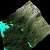
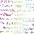

<!DOCTYPE html>
<!--[if lt IE 7]>      <html class="no-js lt-ie9 lt-ie8 lt-ie7"> <![endif]-->
<!--[if IE 7]>         <html class="no-js lt-ie9 lt-ie8"> <![endif]-->
<!--[if IE 8]>         <html class="no-js lt-ie9"> <![endif]-->
<!--[if gt IE 8]><!--> <html class="no-js"> <!--<![endif]-->
    <head>
        <meta charset="utf-8">
        <meta content="Benjamin Bill Planche" name="author">
		<meta content="Portfolio of Benjamin (Bill) Planche, aka Aldream. About image processing, computer graphics, web experiments,..." name="description">
		<meta content="aldream, benjamin, planche, bill, demo, projects, web, image, graphics, sandbox, portefolio" name="keywords">
		<meta content="index,follow" name="robots">
        <meta http-equiv="X-UA-Compatible" content="IE=edge,chrome=1">
        <title>Aldream - Demo Sandbox</title>
        <meta name="viewport" content="width=device-width">

		<link href='http://fonts.googleapis.com/css?family=Source+Code+Pro|Open+Sans:400italic,400,700' rel='stylesheet' type='text/css'>
        <link rel="stylesheet" href="css/normalize.css">
        <link rel="stylesheet" href="css/main.css">
        <script src="js/vendor/modernizr-2.6.2.min.js"></script>
    </head>
    <body id="demo">
			<!--[if lt IE 7]>
				<p class="chromeframe">You are using an <strong>outdated</strong> browser. Please <a href="http://browsehappy.com/">upgrade your browser</a> or <a href="http://www.google.com/chromeframe/?redirect=true">activate Google Chrome Frame</a> to improve your experience.</p>
			<![endif]-->

			<!-- Add your site or application content here -->
			<header>
				<div id="demo-info">
					<a href="javascript:ToggleInfo();"></a>
					<div></div>
				</div>
				<h1> <span id="demo-title">Loading...</span>, by <a href ="http://aldream.net" title="Aldream.net">Aldream</a></h1>
				<nav id="menu-top-mini-demo">
					<ul>
						<li><a href="/blog" title="Blog"></a></li>
						<li><a href="/demo" title="Demo"></a></li>
						<li><a href="/projects" title="Projects"></a></li>
						<li><a href="/about" title="About"></a></li>
					</ul>
				</nav>
				<nav id="demo-menu">
					<ul>
						<li>
							<a class="sandBoxLink" href="demo/js1k-2013-pointillism.html">●</a>
							<div class="desc">
								
								<h2><a class="sandBoxLink" href="demo/js1k-2013-pointillism.html">Pointillism</a></h2>
								<p>1024B landscape generator (JS1K submission)</p>
								<details>procedural generation, stochastic interpolation, painter algorithm</details>
							</div>
							<div class="info">
								<p><em>Pointillist representation of an animated landscape: watch Spring comes and passes, and moving shadows casted by clouds.</em></p>
								<h3>Controls</h3>
								<ul>
									<li>Move the mouse to fly around.</li>
									<li>Drag (keep left click down and move) to fly around, observing a lighter version of the landscape</li>
									<li>Use the wheel while dragging to draw near or observe from afar.</li>
									<li>F5 / Actualize the page to generate a different landscape.</li>
									<li>Change the ratio of the window if you find the relief too flat or too steep (it should look fine with a landscape ratio, but you can have different tastes...)</li>
								</ul>
								<p>If you let go the click while moving too fast,you will probably get some glitches: wait a tenth of second after dragging to prevent it. ;-)<br/>
								Also, if you keep zooming, you will eventually reach a negative distance, inverting the controls.</p>
								<p>The canvas is regularly reset (~40s), to prevent the page to crash because of the growing memory size of the more and more detailed display.</p>
								
								<h3>Description</h3>
								<p>Final entry for <a href="http://js1k.com/2013-spring/" title="JS1k Spring'13">JS1K Spring'13</a> edition. (see it <a href="http://js1k.com/2013-spring/demo/1507" title="JS1k Spring'13 - Pointillism">here</a>)</p>
								<p>This time I use the same landscape generation method than in my previous demo, but with a totally different rendering algo, inspired by romancortes' 2012 demo (<a href="http://romancortes.com/blog/1k-rose/" title="Roman Cortes' Website">romancortes.com/blog/1k-rose/</a>).</p>
								<p>This <em>pointillist</em> method gives a result a bit less "clean" than with the Painter's algo, but is much lighter, in terms of processing time and bytes. And that's how I've been able to add some animations...</p>
								<p>This demo features:</p>
								<ul>
									<li>A detailed, kinda-realistic, random landscape (moutains, islands, beaches, etc)</li>
									<li>Lightning (fixed sun - no shadows or reflects)</li>
									<li>Vegetation (sun-bathed hills, forests in the coombs, alpines above, etc - imagination can be required)</li>
									<li>Snow, found on the peaks or in the shady coombs, covering most of the landscape when Winter reigns and melting away with the coming of Spring (so influenced by altitude, lighting and time)</li>
									<li>Shadows casted by (unseen) moving clouds on the landscape</li>
									<li>Some pseudo-random effects to try to make the water texture less uniform</li>
									<li>Controls</li>
								</ul>

								<h3>Thanks</h3>
								<ul>
									<li><a href="https://twitter.com/aivopaas" title="Twitter - @aivopaas">@aivopaas</a> for JSCrusher</li>
									<li><a href="https://twitter.com/romancortes" title="Twitter - @romancortes">@romancortes</a> for the inspiration and nice articles</li>
									<li><a href="https://twitter.com/njbenji" title="Twitter - @njbenji">@njbenji</a> & <a href="http://jonasbru.github.io/" title="Github - jonasbru">jonasbru</a> for their remarks</li>
									<li><a href="https://twitter.com/kuvos" title="Twitter - @kuvos">@kuvos</a> for this challenge</li>
								</ul>
								
								<h3>Source <small>1024B - works with the <a href="http://js1k.com/2013-spring/shim.html" title="JS1K shim">provided shim</a></small></h3>
								<pre>_='dgX=R=r2;Y=.6;JL=l=0&[TN,5,Z=9,h=8];(D9>l;){i=p*oO;dh/;(++l]i)(j=p;jv=	N@iP|0jP|0],w=i*p+j,l][w&&(i%2?*2++p]+/4:(v+	+oP:+	P:vh@Y-&6>]?6:;o=i=pir/}g;setInterval(m=-Zw=-KZz=Yx=KYb=J;J%290*Tg=[],); (j=1e4;jtw,k=@R-2*ri=l,lL/r+.5|0,p=h,hL/r%1,F=h>p,F=N*i+l]+(C(!Cv=F-X*z-3,Um,f=z*v+(I=m*U+w*t)*x,v=(v*x-z*I^H+H,I=(w*U-m*t^W+W,f<p=v*2*W+I]p&f,p=],F-=t+(p-h*]-(1-h)**52,Style="hsla("+[p?25Q+bQ*4:7pA*3Q:FG(u=F-bA:5.2&lt;FA*t/5:6.05&lt;pAQ*2:6&lt;pA:1.6+*.8b*l*i/47*f/3J/13)*17G.6]+")",$I,v,t=u/50+3-T,t)));++J},16)down=0}up}moveZ*X/W,Y=Y/H)}NnX+=f.dE|-f.DE}$0,0,W=c.wV#WVO8,H=c.hB#HB-21W/function(f){Math.;onmousecos(+orandom()=[];	lO][u]-*F-F@d[wa.fill25@6&lt;=2),--;wheelLO1-X*f.client)+for||(d[u=T/87)g[+1])j%2?(v#=inner$Rect(&]=@*(A?tBeightCF?p:hEeltaYG"%",Ksin(L=kN=oO-1P/2Q/pVidth^)/f*';for(Y in $='^VQPONLKGECBA@&$#	')with(_.split($[Y]))_=join(pop());eval(_)</pre>
								<p>Take a look at the comments in the running script, or at my <a href="http://js1k.com/2013-spring/demo/1507" title="JS1k Spring'13 - Pointillism">JS1K submission</a>, to see the <em>beautified</em> source and get more technical explanations.</p>

							</div>
						</li>
						<li>
							<a class="sandBoxLink" href="demo/js1k-2013-loom.html">●</a>
							<div class="desc">
								
								<h2><a class="sandBoxLink" href="demo/js1k-2013-loom.html">Loom</a></h2>
								<p>1024B landscape generator (JS1K submission)</p>
								<details>procedural generation, stochastic interpolation, painter algorithm</details>
							</div>
							<div class="info">
								<p><em>Spring is coming, The mountains take off their white mantle, Random mesh of life and ice, lakes and rocks.</em></p>
								<h3>Controls</h3>
								<ul>
									<li>Move the mouse to fly around.</li>
									<li>Drag (keep left click down and move) to fly around, observing a lighter version of the landscape</li>
									<li>Use the wheel while dragging to draw near or observe from afar.</li>
									<li>F5 / Actualize the page to generate a different landscape.</li>
									<li>Change the ratio of the window if you find the relief too flat or too steep (it should look fine with a landscape ratio, but you can have different tastes...)</li>
								</ul>
								<p>If you let go the click while moving too fast,you will probably get some glitches: wait a tenth of second after dragging to prevent it. ;-)<br/>
								Also, if you keep zooming, you will eventually reach a negative distance, inverting the controls.</p>
								
								<h3>Description</h3>
								<p>Made for JS1K <a href="http://js1k.com/2013-spring/" title="JS1k Spring'13">Spring'13</a> edition, this demo didn't make it to the board, being replaced by my final one.</p>
								<p>It uses the same rendering method as my other submission (see <a class="sandBoxLink" href="demo/js1k-2013-morphose.html" title="Morphose Demo">here</a> too), the <a href="https://en.wikipedia.org/wiki/Painter%27s_algorithm" title="Wikipedia Article - Painter's algorithm">Painter's algorithm</a>, simplistic but quite light.</p>
								<p>The landscape is generated using a mix between the <a href="https://en.wikipedia.org/wiki/Diamond-square_algorithm" title="Wikipedia Article - Diamond-square algorithm"> Midpoint displacement and the Diamond-square algorithms</a>, starting with a 2x2 matrix to get a detailed 257x257 heightmap, which is then used to build the 3D mesh.</p>
								<p>Colors are applied taking into account the height (water < beach < vegetation < snow) and an rough estimation of the incline for the luminosity. By playing with those parameters and using the flexibility of the HSL color system, it is thus possible to create various nuances of vegetation (meadows for the sun-bathed hills, forests in the coombs, alpines above <small>- imagination can be required here</small>) or to simulate the effect of the sun on the snow (only found in the shadows for the lower altitudes).</p>
								<p><small>By the way, don't fly to close to the surface or you might get entangled in the mesh and unravel the whole world (well, you will actually just get some threads spoiling the view)... Also, if you keep zooming, you will eventually reach a <em>negative distance</em>, inverting the controls. Both are harmless, but now you won't be surprised. I hadn't enough bytes left to better handle the zoom, sorry.<br/>
								As for "why only stroking and not filling the faces?", the answer is simple: I couldn't afford to do both. I found the gaps left by stroking interesting, like a reminder of the "substantial" part of emptiness in the universe fabric. ;-)</small></p>
								
								<h3>Thanks</h3>
								<ul>
									<li><a href="https://twitter.com/aivopaas" title="Twitter - @aivopaas">@aivopaas</a> for JSCrusher</li>
									<li><a href="https://twitter.com/njbenji" title="Twitter - @njbenji">@njbenji</a> & <a href="http://jonasbru.github.io/" title="Github - jonasbru">jonasbru</a> for their remarks</li>
									<li><a href="https://twitter.com/kuvos" title="Twitter - @kuvos">@kuvos</a> for this challenge</li>
								</ul>
								
								<h3>Source <small>1023B - works with the <a href="http://js1k.com/2013-spring/shim.html" title="JS1K shim">provided shim</a></small></h3>
								<pre>_='d	g	R=r2;Y=.6;=0[o,5,Z=9,T=h=8];D	8>l;){i=p*o@;d	hg[++v=CQ_)+j_Aw=i*p+j,$wQ%2?&*2++p]+]!4:(v++o`&+`v)+h*(Y#6>]?6:]o=i=pirD[)k;kDZ++[ijECi+jAQ+kO-k)z=E+k*pAQO)y=E+oAy-=x+(z-y!r,"hsla("+[z?R/z:6#F*2/y:y)+"%",y@?x/Y:6.05&lt;F*x/7:6&lt;F:2/3)]+"%,"]}e^BfillRect(0,0,h=c.widUKWidU@8,r=c.hGKHG-21m=-LZw=-~Zo=LYx=~Yg	hq){]	j=9;j;vo,um,tw,].push(pCv+(k=m*u+w*t)*x,(v*x-o*k!p*r+r,(w*u-m*t!p*h+h)$910]}p=-l*p/40;g.sort(return f[3]-n[3]}qg)Style=$9]+l/p+")",BbegPaU(#BmovN87215487]#Vdown5,i=sete,9)up8,eVmove^ZX/h;YY/r=on^R+=f.dJ|-f.DJ/80};eVfunction(f,n){[l][-randomV]#BlN*r@1,for(};onmouse=--j]-R*	=[];^cleari#T=MaU.l]	i)j=p;j@][ud[w32*(6&lt;A$);--;wheel/;Interval(=f.clientinBstroke+1g[lD[T]=2]=!)/#),$g&j%2?(v@-1A],Ba.C=o*Ed[uFz?xGeightJeltaYK=nerLcos(NeTo($O)(jQ(iUthV()^=_/2|0`]!2:ql  ~s(';for(Y in $='~q`_^VUQONLKJGFECBA@&$#!	')with(_.split($[Y]))_=join(pop());eval(_)</pre>
								<p>Take a look at the comments in the running script to see the <em>beautified</em> source and get more technical explanations.</p>

							</div>
						</li>
						<li>
							<a class="sandBoxLink" href="demo/js1k-2013-morphose.html">●</a>
							<div class="desc">
								
								<h2><a class="sandBoxLink" href="demo/js1k-2013-morphose.html">Morphose</a></h2>
								<p>1024B 3D demo (JS1K submission)</p>
								<details>mesh generation, tweening, painter algorithm</details>
							</div>
							<div class="info">
								<p><em>"They said I could be anything..." <small>- 3D Mesh</small></em></p>

								<h3>Controls</h3>
								<ul>
									<li>Change the camera orientation with the mouse.</li>
									<li>Click to generate an impulse, briefly affecting the mesh cohesion. Click several times to stack impulses and get a kaleidoscope-like effect.</li> 
									<li>Press any key to switch between "immaterialness" (starting mode) or "reality" (i.e. to invert the depth...).</li>
								</ul>

								<h3>Description</h3>
								<p>First JS1K entry for the <a href="http://js1k.com/2013-spring/" title="JS1k Spring'13">Spring'13</a> edition. (see it <a href="http://js1k.com/2013-spring/demo/1442" title="JS1k Spring'13 - Pointillism">here</a>)</p>
								<p>This demo uses the <a href="https://en.wikipedia.org/wiki/Painter%27s_algorithm" title="Wikipedia Article - Painter's algorithm">Painter's algorithm</a> to render the 3D mesh: after projecting each face on the coordinate system defined by the camera, we sort them by decreasing depth to get the painting order. Simple, but quite light (and it is possible to use this painting order to apply effects such as a depth fog).</p>
								<p>The displayed shape is the result of a chaotic tweening between two pre-generated meshes, a cube and a sphere. To get a smooth tweening for the faces, the sphere geometry is created by mapping each vertex of the cube (cube-mapping method).</p>
								<p>To reduce the "collision" effect when the camera enters the shape and to make the whole demo looks more "unreal", I decided to invert the depth order during the rendering process. You can still observe the original order by pressing any keys.</p>
								<p>Alas, this demo wasn't running as smoothly with Firefox and Opera as with Chrome (and I couldn't apply most of the optimization tricks because of the specificity of this scene or the lack of bytes). So I decided to add a simple browser detector, to reduce the shape details for Firefox and Opera. I'm not fond of this exception, but I found the render lags even worse (and it was interesting to search a trick to detect the browsers in a minimal number of bytes...). Now that you're aware of the difference, I just invite you to give it a try on Chrome, if you want more details.</p>

								<h3>Thanks</h3>
								<ul>
									<li><a href="https://twitter.com/aivopaas" title="Twitter - @aivopaas">@aivopaas</a> for JSCrusher</li>
									<li><a href="https://twitter.com/njbenji" title="Twitter - @njbenji">@njbenji</a> & <a href="http://jonasbru.github.io/" title="Github - jonasbru">jonasbru</a> for their remarks</li>
									<li><a href="https://twitter.com/kuvos" title="Twitter - @kuvos">@kuvos</a> for this challenge</li>
								</ul>
								
								<h3>Source <small>1020B - works with the <a href="http://js1k.com/2013-spring/shim.html" title="JS1K shim">provided shim</a></small></h3>
								<pre>_='X=navigatK.vendK?1:2;SCTt=Z=Y=F=U=4,Vv=[eg2-4f%2)x=v[fBy$1)Bz$2)BC	x,y,zd=sqrLx*x+y!+z*zS	x/d,y/d,z/d)Of=6;fi&ij&jkQ;kS	C	E,jE+1,j+1E+k,j+^k_=d,F++;V*eR-`97*g*2^(R)},Py=abs(g-e)/g;1<y?0:^(3-2!)!!OMRecL0,0,W=c.widthGWidth-21,H=c.hJGHJ-21W/Q,H/Q,si=`23D=0T)D+=P(T	--,47T	||T.shifL);R=P(++t%263,97)/2,y=-w=-z=Y+x=Y+)C){s	e=U^+tan(_)*D))*_*R);f=9;f;vz,ux!,rx*w,s	N=z*v+xk=y*u+w*r(x*v-z*k)/N*H+H,(w*u-r!)/N*W+W));s=_}s.sKLe[6]-g[6]})s)>>"hsl("+[263i/s),"47%",F*X*X/77]+"%)",Abeg#Path(Amov@87542187](()clickT97)mousemoveZX/W,YY/HkeypressU=-UOsetInterval(M,16)function(e,g){	[Math.=V(C--fSf])+e*]Al#@fK(cos(=[	[F]),.push(+.5|0return ;F # 9]AfillOb.onQ*e.client],--;)`47s#(Astroke=+i)s/4*X-2,Z+`31*(!*y#in$=v[(f+&=16/X;>Style=@eTo(sAa.B%3EV(iG=#nerJeightKorLt(O};Q=2^1-_S`t/';for(Y in $='`_^QOLKJGEBA@>&$#!	')with(_.split($[Y]))_=join(pop());eval(_)</pre>
								<p>Take a look at the comments in the running script, or at my JS1K submission, to see the <em>beautified</em> source and get more technical explanations.</p>

							</div>
						</li>
						<li>
							<a class="sandBoxLink" href="demo/beziering.html">●</a>
							<div class="desc">
								
								<h2><a class="sandBoxLink" href="demo/beziering.html">Beziering</a></h2>
								<p>Intoxicated Bezier curves</p>
								<details>canvas, bezier</details>
							</div>
							<div class="info">
								<p><em>Intoxicated Bézier curves tracer</em></p>

								<h3>Controls</h3>
								<ul>
									<li>Click to give it some life, click again to get some peace.</li>
								</ul>

								<h3>Description</h3>
								<p>Some time ago, I read with great interest a presentation made by Steven Wittens, aka <a href="http://www.acko.net" title="Acko.net">Acko</a>, and I like <a href="http://acko.net/files/fullfrontal/fullfrontal/slides-net/" title="Making things with Maths - Slides">"making things with Maths"</a> too... Following his explanations and adding a <em>personal touch</em>, I made my own Bézier plotter.</p>
								<p>This is in fact a direct graphic interpretation of <a href="https://en.wikipedia.org/wiki/De_Casteljau%27s_algorithm#B.C3.A9zier_curve" title="Wikipedia Article - De Casteljau's algorithm">De Casteljau's algorithm</a> to evaluate Bézier curves.</p>
								<p>Given a polyline P<small>0</small> made of <em>n</em> segments (<em>n+1</em> points). Every iteration <em>#i</em> of our algorithm, we take, for each oriented segment, the point situated at <em>(i / MAX_ITE)%</em> of the segment length, and we connect these points to build a new polyline P<small>1</small> of <em>n-1</em> segments. We recursively repeat this operation on the polyline and its descendants (P<small>2</small> with <em>n-2</em> segments, P<small>3</small> with <em>n-3</em> segments,etc), until we get a polyline of 0 segment, ie. a single point.</p>
								<p>If we follow the path of this point through the consecutive iterations, we get a Bézier curve of degree <em>n</em> (while the moving segments extremities of a polyline P<small>X</small> follow Bézier curves of degree <em>X</em>).</p>
								<p>The specificity here is that I use close polylines: the overlapping effect (by adding a segment to close them) allows me to virtually avoid the segments decrease every iteration (it thus could be possible to iterate infinitely, until reaching the limit state.</p>
								<p>The <a href="http://kineticjs.com" title="KineticJS.com">Kinetic.js library</a> is used here to handle various canvas layers easily.</p>
							</div>
						</li>
						<li>
							<a class="sandBoxLink" href="demo/404-windy.html">●</a>
							<div class="desc">
								
								<h2><a class="sandBoxLink" href="demo/404-windy.html">404-Windy</a></h2>
								<p>#404 CSS animation</p>
								<details>css animation, css 3D</details>
							</div>
							<div class="info">
								<p>A simple experiment using CSS animations and 3D transforms.<br/>
								JS is only used beforehand to randomize the animations durations.</p>
								<p>Don't search for any meaning here, I'm not sure either what I wanted to represent...</p>
							</div>
						</li>
						<li>
							<a class="sandBoxLink" href="demo/404-acid.html">●</a>
							<div class="desc">
								
								<h2><a class="sandBoxLink" href="demo/404-acid.html">404-Acid</a></h2>
								<p>#404 CSS animation</p>
								<details>dom manipulation</details>
							</div>
							<div class="info">
								<p>At first I was trying to implement a function to alter the text content of a DOM tree by inserting new node inside... (It is indeed a bit more complicated than it sounds, since you can't use directly <em>innerHTML</em> or <em>innerText</em> without breaking the tree by also affecting the HTML nodes it may already contain. You have to iterate through the whole tree to find every text-node leaf.)<br/>
								... and the tests I was using slowly drift toward <em>that</em>... (Why am I sharing this, btw?)</p>
							</div>
						</li>
					</ul>
				</nav>
			</header>
			<iframe name="scene" id="scene" src=""></iframe> 

        <script src="//ajax.googleapis.com/ajax/libs/jquery/1.9.1/jquery.min.js"></script>
        <script>window.jQuery || document.write('<script src="js/vendor/jquery-1.9.0.min.js"><\/script>')</script>
        <script src="js/plugins.js"></script>
        <script src="js/main.js"></script>
		<script>
			function AdjustDim() {
				$('#scene').css('height', (window.innerHeight)+'px');
				$('#scene').css('width', '100%');
				$('#demo-menu').css('margin-top', (window.innerHeight/2-$('#demo-menu > ul > li').length*18)+'px');
				$('#demo-info').css('max-height', (window.innerHeight - 40)+'px');
			}
			$(window).resize(AdjustDim);
			AdjustDim();
			
			function ToggleInfo() {
				if ($('#demo-info > div').css('display') == 'block') {
					$('#demo-info > div').css('display', 'none');
					$('#demo-info').css('max-width', 'auto');
					$('#demo-info').css('background', 'none');
					$('#demo-info').css('border', 'none');
				} else {
					$('#demo-info').css('max-width', '30em');
					$('#demo-info').css('max-height', (window.innerHeight - 40)+'px');
					$('#demo-info').css('border', '1px solid #ddd');
					$('#demo-info > div').css('display', 'block');
					$('#demo-info').css('background', '#fff');
				}
			}
			
			function LoadDemo(url, doPush) {
				//$('#scene').attr('src', url); // Bad idea: causes a troublesome pushState.
				window.frames['scene'].location.replace(url);
				var title = $('#demo-menu h2>a[href="'+url+'"]').text();
				var hash = "#"+url.split("/").pop().split(".")[0];
				$('#demo-title').text(title);
				var info = $('#demo-menu li>a[href="'+url+'"] ~ .info').html();
				$('#demo-info > div').html(info);
				if (doPush) {
					history.pushState({url:url}, title, hash);
					//$('#scene').load(function(){$('#scene').unbind('load'); history.replaceState(state, title, hash);});
				}
			};
			
			var hash = window.location.hash.substring(1);
			if (!hash) {
				var regexHash = new RegExp('/demo/([A-Za-z0-9-]+)/?$');
				hash = regexHash.exec(location.href);
				if (hash) {
					hash = hash[1];
				}
			}
			
			if (hash) {
				var url = 'demo/'+hash+'.html';
				if ($('#demo-menu h2>a[href="'+url+'"]').length > 0) {
					history.replaceState({url:url}, hash, 'demo#'+hash);
					LoadDemo(url);
				}
				else {
					LoadDemo('demo/404-acid.html');
					alert('Sorry, this demo couldn\'t be found.');
				}
			}
			else {
				var lastDemo = $('#demo-menu li a').first().attr('href');
				LoadDemo(lastDemo);
			}
			
			$('.sandBoxLink').click(function(){ LoadDemo($(this).attr('href'), true); return false;});
			
			window.onpopstate = function(event) {
				if (event.state && event.state.url) {
					LoadDemo(event.state.url);
				}
				else if (!window.location.hash) {
					var lastDemo = $('#demo-menu li a').first().attr('href');
					LoadDemo(lastDemo);
				}
			};
			
			$('#demo-menu div img').each(function() {
				var top = ($(this).parent().height()/2-25)+'px';
				$(this).css('margin-top', top);
			});
		</script>

        <!-- Google Analytics: change UA-XXXXX-X to be your site's ID. -->
        <!--<script>
            var _gaq=[['_setAccount','UA-XXXXX-X'],['_trackPageview']];
            (function(d,t){var g=d.createElement(t),s=d.getElementsByTagName(t)[0];
            g.src=('https:'==location.protocol?'//ssl':'//www')+'.google-analytics.com/ga.js';
            s.parentNode.insertBefore(g,s)}(document,'script'));
        </script>-->
    </body>
</html>
